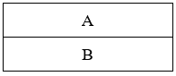
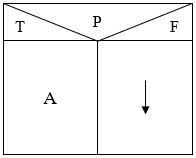
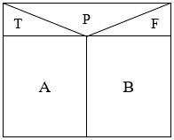
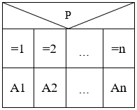
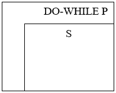
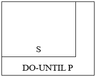
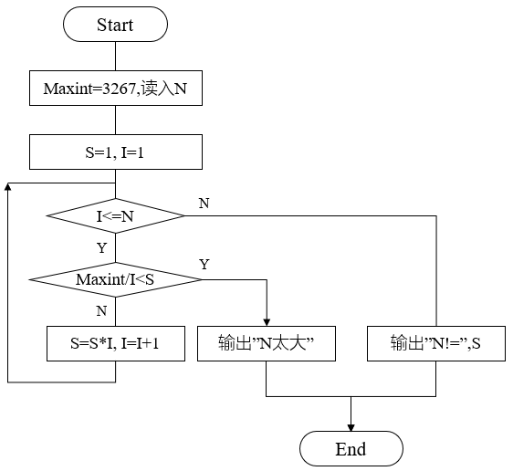
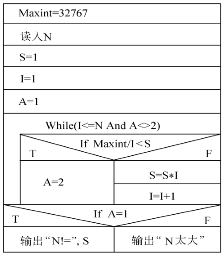
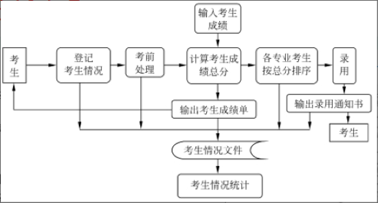
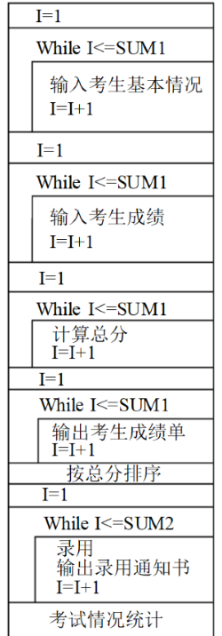

- 盒图是由 Nassi 和 Shneiderman 提出，又称 N-S 图
- 指定了5个图形组件来表示五个基本控制结构
- 没有箭头，不允许随意转移，只允许程序员用结构化设计方法来思考问题、解决问题
- 常见结构 Statement
1. 顺序结构
- 依次执行 A、B

顺序结构
2. 选择结构
- 如果 P 为 T，执行 A
- 否则退出

IF-THEN
- 如果 P 为 T，执行 A
- 否则执行 B

IF-ELSE-THEN
- 如果 P 为 1，执行 A1
- 如果 P 为 2，执行 A2
- 依次类推

SWITCH-CASE
3. 循环结构
- S 表示 Statement，循环体

WHILE-DO

DO-UNTIL
将右图含有Goto语句的程序流程图改为 N-S 图

含有Goto语句的程序流程图
- 考生报名后，将考生基本情况（姓名、性别、住址、报考专业等）输入考生文件
- 招聘委员会工作人员要根据考生报考的专业、地址来进行编排准考证号、安排考场等考前处理，并将这些信息存放到考生文件中去
- 考试结束后将每位考生每门课的成绩输入到系统中去
- 计算每位考生各门课的成绩总分，打印考生成绩单
- 各专业分别将考生按成绩总分从高分到低分排序，供招聘单位在录用时参考
- 录用工作按考生成绩总分从高分到低分依次进行，总分相同时专业课成绩高的优先录用
- 输出录用通知书，将录用通知书发放给被录用的考生
- 录用工作结束后，进行各种统计：报名人数、实考人数、成绩总分平均分、各科成绩平均分等

含有Goto语句的 N-S 图
招聘考试成绩管理系统的 N-S图

DFD 图

N-S 图